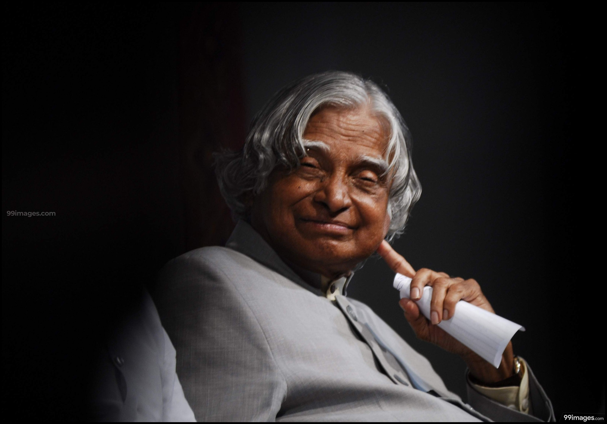

Dr. Avul Pakir Jainulabdeen Abdul Kalam, fondly known as the "Missile Man of India," was the 11th President of India and one of the most respected scientists in the country. He played a pivotal role in India’s space and defense programs, contributing to the development of ballistic missile and launch vehicle technology.
Born in Rameswaram, Tamil Nadu, in 1931, Dr. Kalam rose from humble beginnings to become a national icon. His simplicity, humility, and dedication to inspiring young minds made him a beloved figure across India.
As President (2002–2007), he was admired as the "People’s President." Beyond his scientific achievements, he authored several books including Wings of Fire and Ignited Minds, motivating millions to dream big and work hard.
Dr. Kalam’s life is a testament to perseverance, knowledge, and service. His legacy continues to inspire students, scientists, and citizens worldwide.